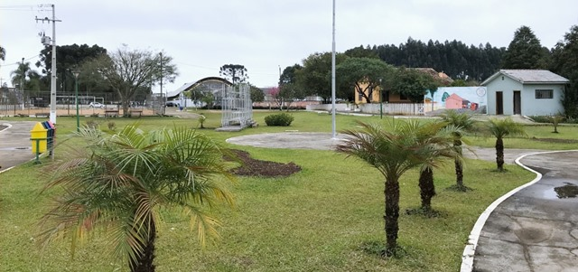
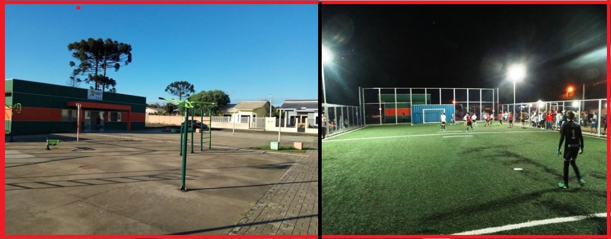

Abaixo estão os lugares mais visitados de Rebouças
Praça do Cristo

A praça do Cristo fica em uma área mais afastada do centro, é pequena e calma, ideal para pequeniques ou passeios em família/casal. (Veja a localização clicando na imagem)
Praça dos ferroviários
A praça dos ferroviários fica no centro da cidade, é um ambiente bonito e pacifico, possuí parquinho cercado para proteção das crianças, academia ao ar livre, campo de futebol e vôlei, e pista para caminhada. É neste lugar que ocorre os maiores eventos da cidade, assim como as apresentações de natal e festa de ano novo. (Veja a localização clicando na imagem)
Vila Ester
A vila Ester é uma vila bastante gradavel de Rebouças, conta com uma praça com uma academia da sáude pública, academia ao ar livre, mini arena de futebol, campo de vôlei, cancha de areia e balança para as crianças, além de pista para caminhada. Na vila Ester está situado o morro do Mourão, principal morro de Rebouças, por ele passa um rio e nele tem uma placa estilo "hollywood" escrito: Vila Ester. (Veja a localização clicando na imagem)